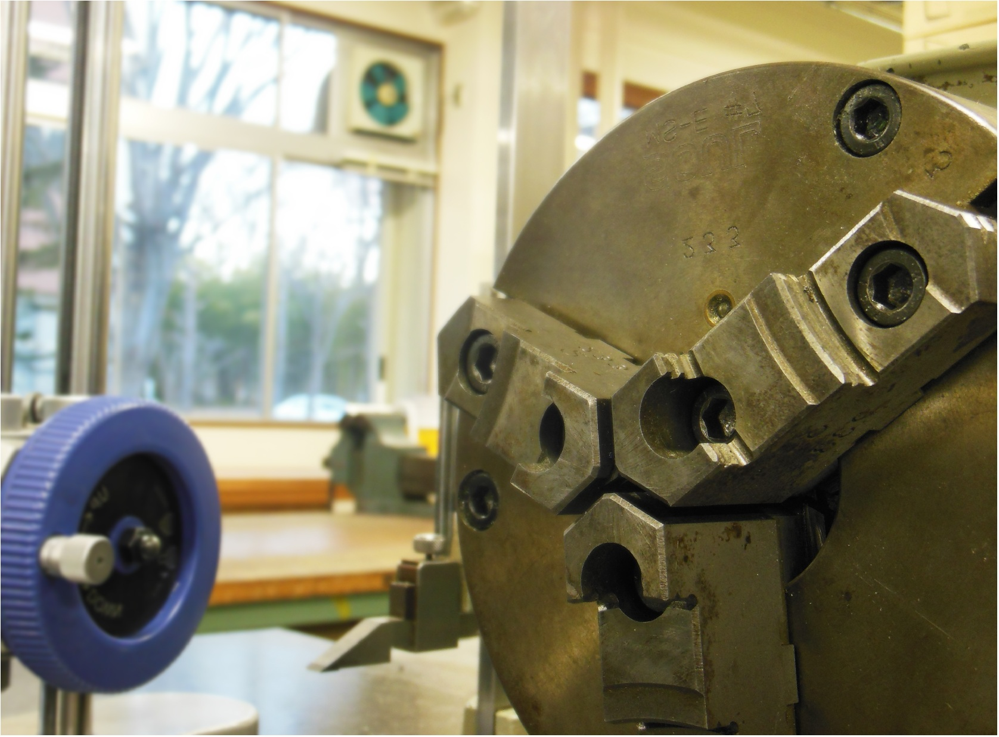

SNCT
SCIENCE
CLUB

仙台高専広瀬キャンパス科学部のホームページへようこそ!
科学部とは主にアイディア対決ロボットコンテストに出場している部活です！
他にも交流ロボコン、地域貢献などの活動をしています！
Recent Event
|
新入生歓迎会を行いました！ |
|
交流ロボコンに参加しました |
|
部内ロボコンを開催しました！！ |
| activity |
|---|
|
JOBS ABOUT SNCT SCIENCE CLUB

Last up date : 2014/07/23